Hamleys — Share A Smile
Reimagining Hamleys as a more inclusive, accessible brand for children across India.
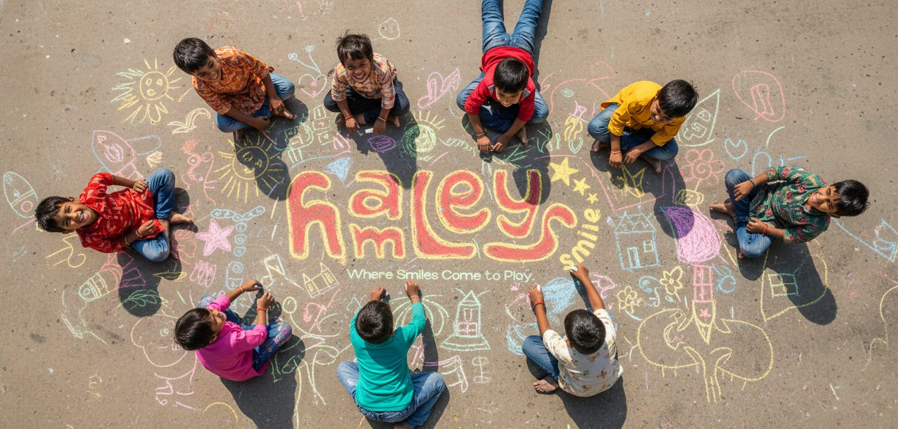
01
My Role
- Campaign Concept & Ideation
- Visual Identity
- Art Direction
- Illustration
- Social Media Design
- Outdoor & Print Collaterals
- Mockups
02
The Brief
Reimagine Hamleys and its positioning to make the joy of play feel accessible to every child, especially in Tier 2 and Tier 3 cities and underserved communities.
The challenge was to move beyond a premium toy-store perception and build a campaign around inclusivity, play, and community.
03
The Idea
Share A Smile was built around a simple thought: every child deserves the chance to play.
The campaign brings children from different backgrounds together through creativity, sharing, and play — turning everyday public spaces into places where children can draw, create, exchange toys, and share joy.
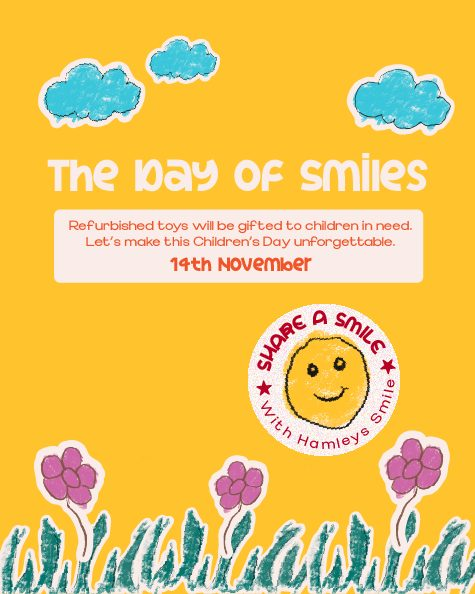
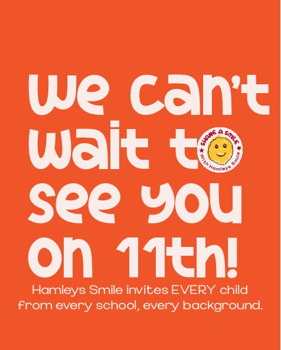
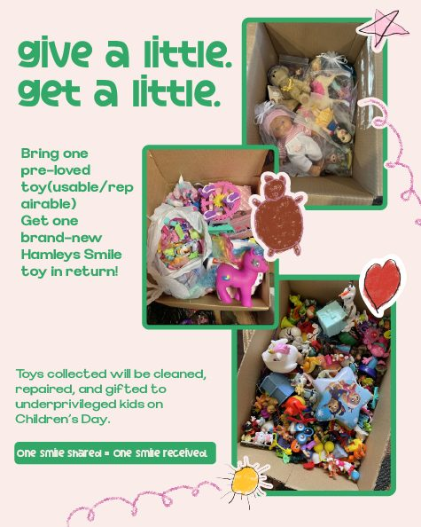
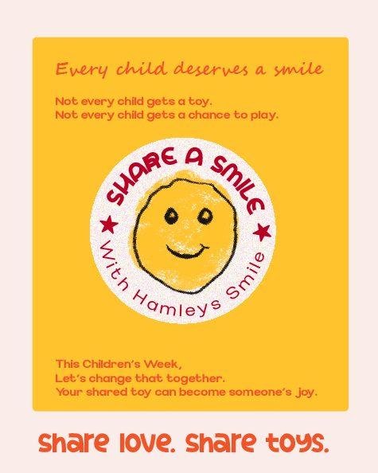
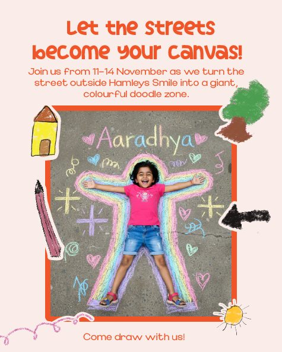
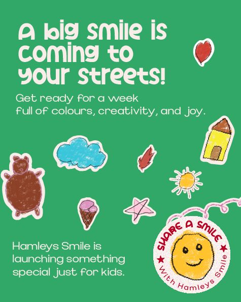
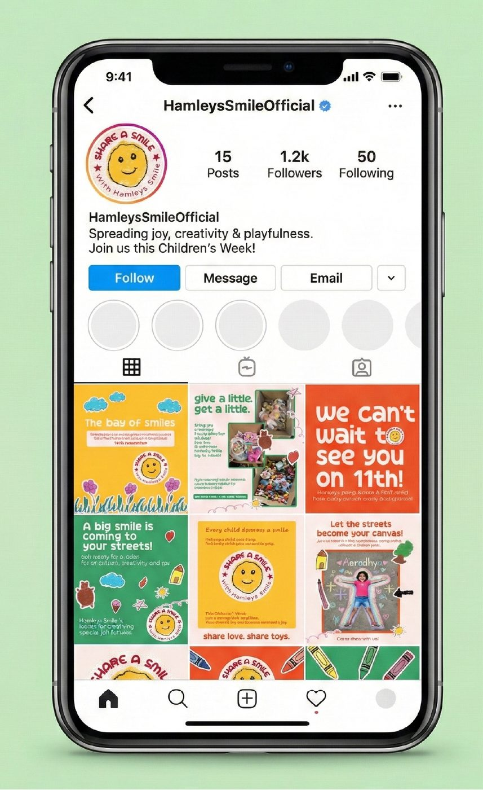
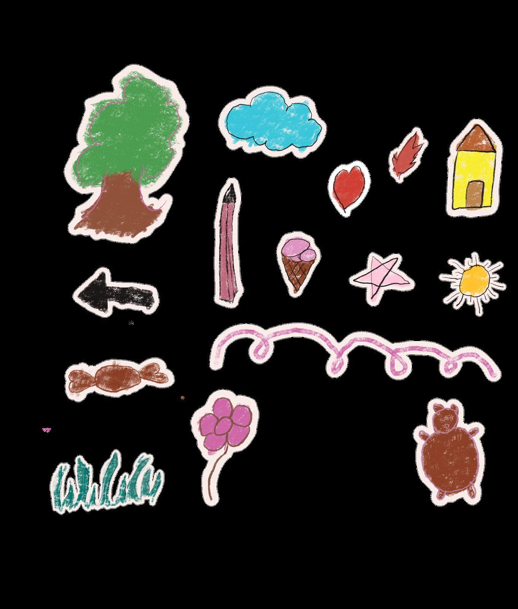
04
The Campaign
The campaign centred around three simple actions: Draw. Share. Give.
Children could participate in street doodle zones, exchange pre-loved toys for new ones, and donate refurbished toys to children who may not have access to them.
Draw. Share. Give.
Share A Smile — campaign film
05
Bringing It To Life
I developed the campaign’s visual identity and communication system across social media, flyers, posters, billboards, and outdoor applications.
Hand-drawn doodles, playful typography, bright colours, and a chalk-inspired campaign logo created a visual language that felt childlike, inclusive, and community-driven.
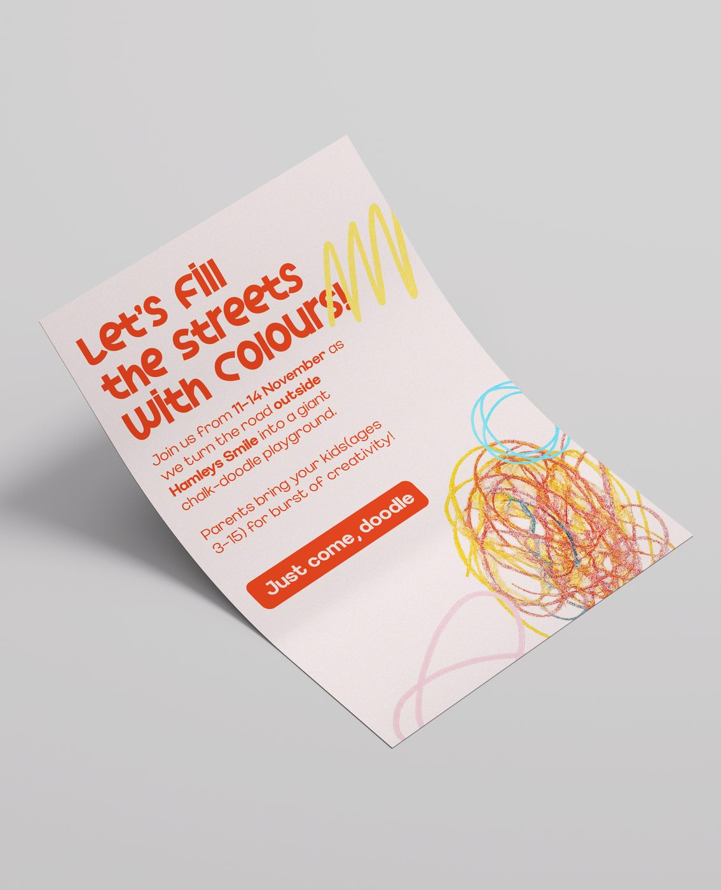

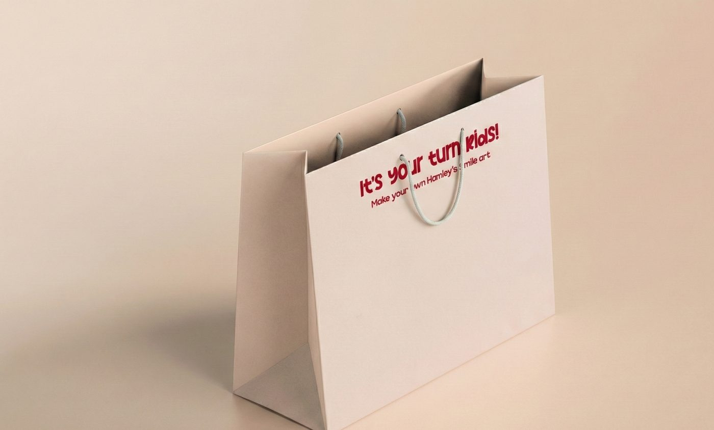
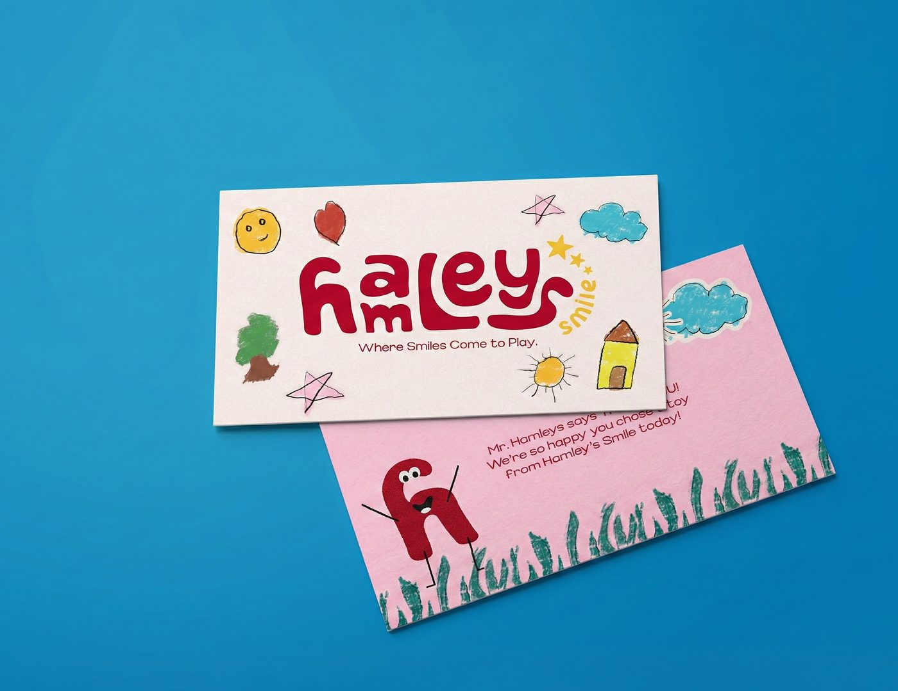
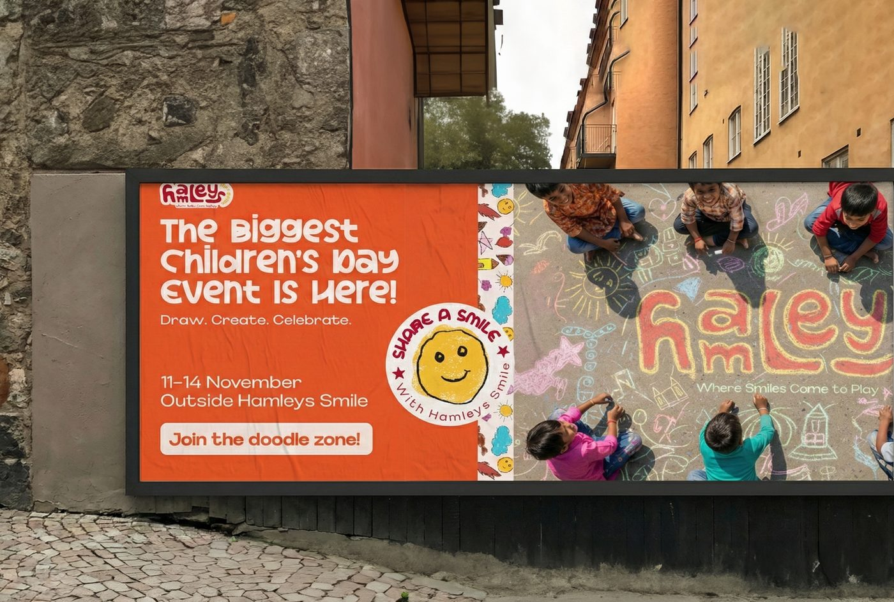
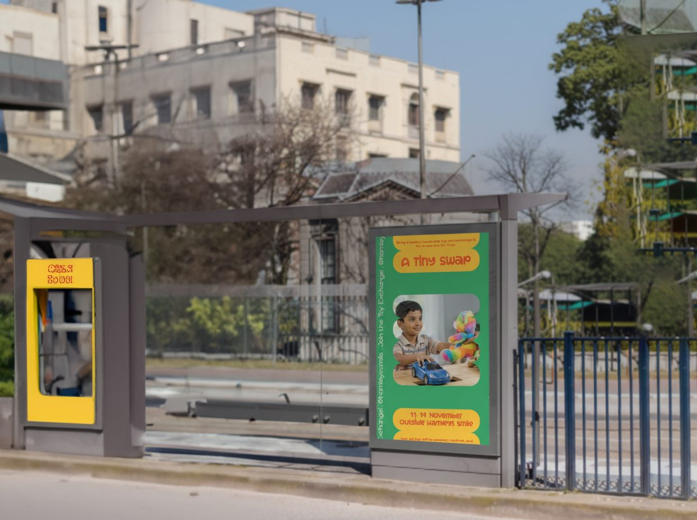
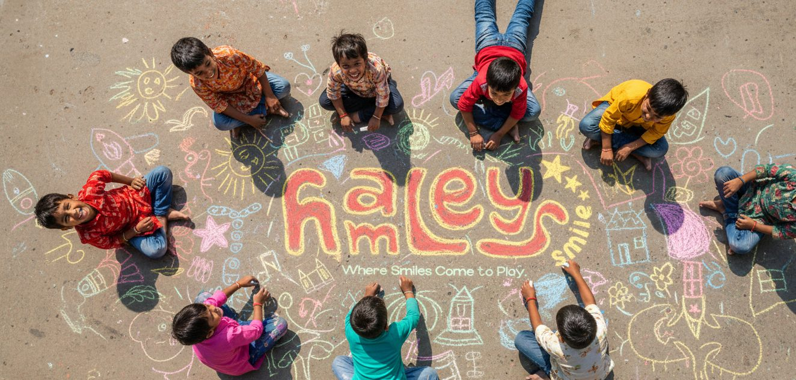
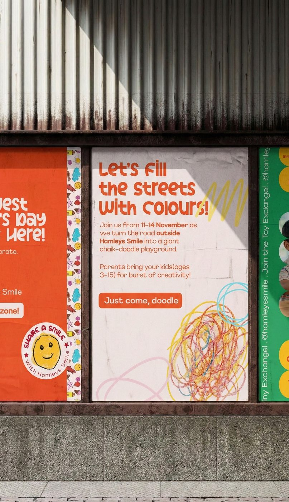
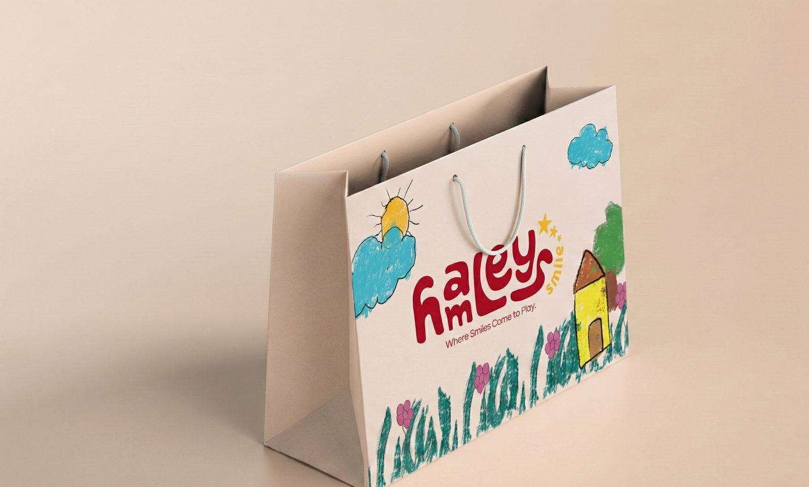
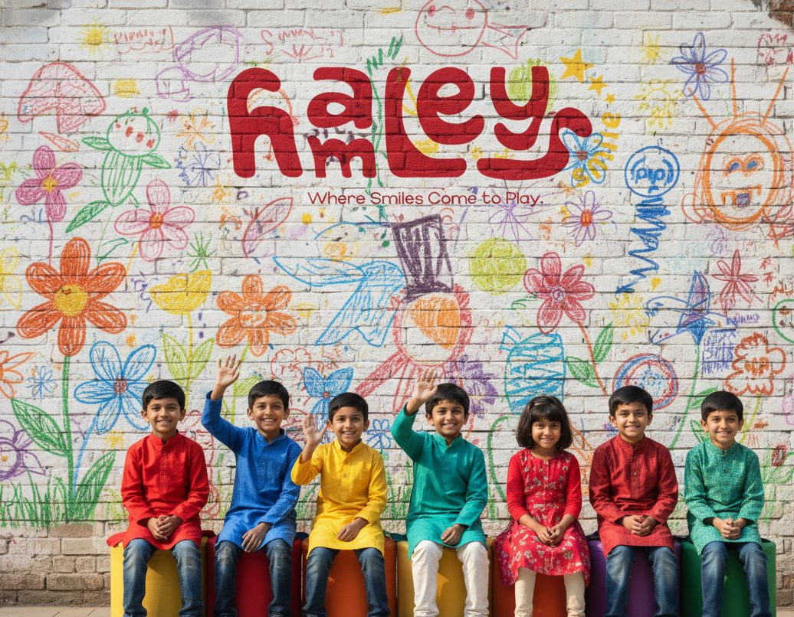
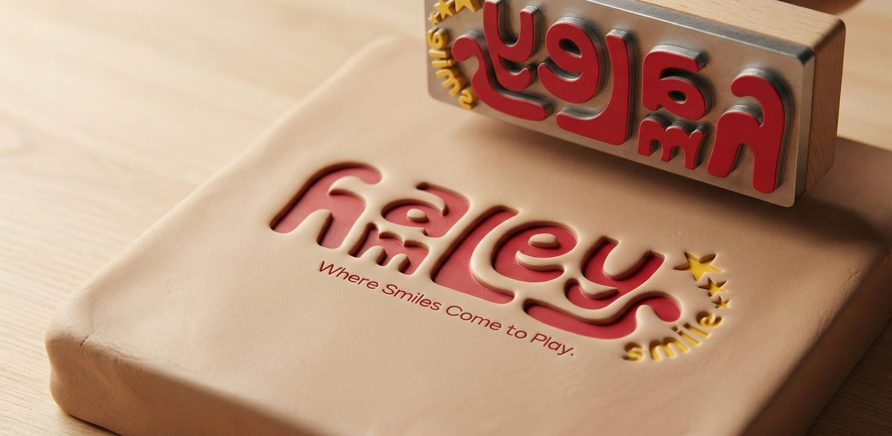
06
What I Learned
This project taught me that repositioning isn’t always about changing what a brand sells — it can be about changing who gets to feel included in it.
Mattel — Barbie Campaign
A campaign built around the idea that when girls play with Barbie, they can imagine themselves becoming anything. The hand-drawn animation style makes the message feel playful, personal, and closer to a child’s imagination.
Mattel — Barbie campaign film
Next up
Explore More Work